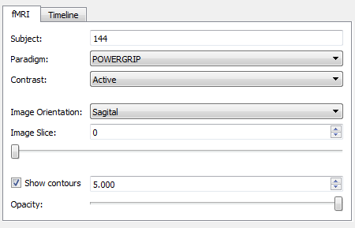
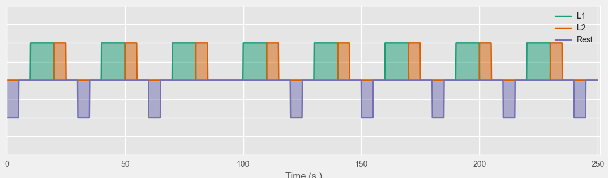
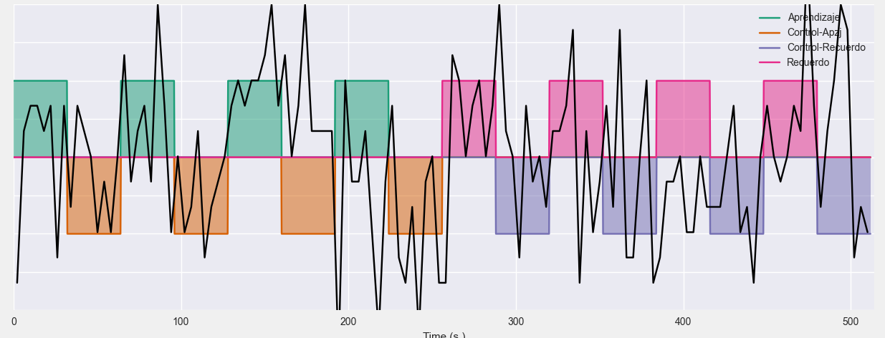
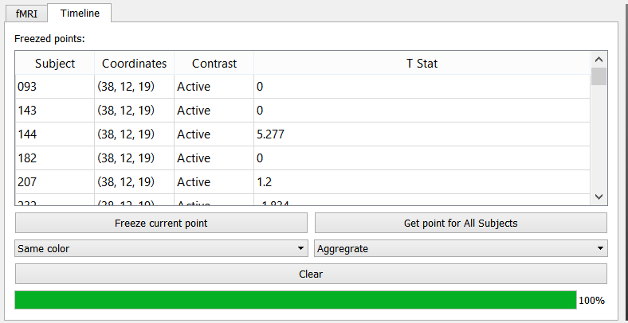
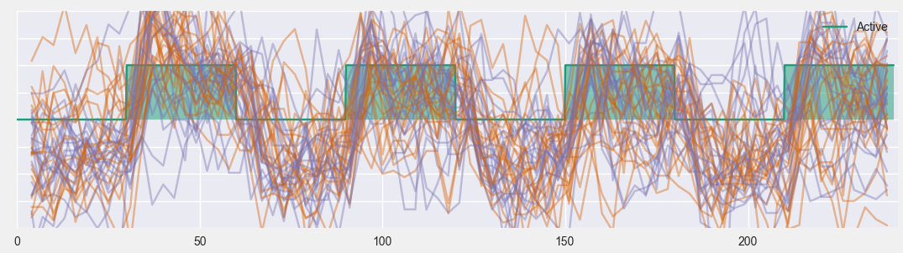
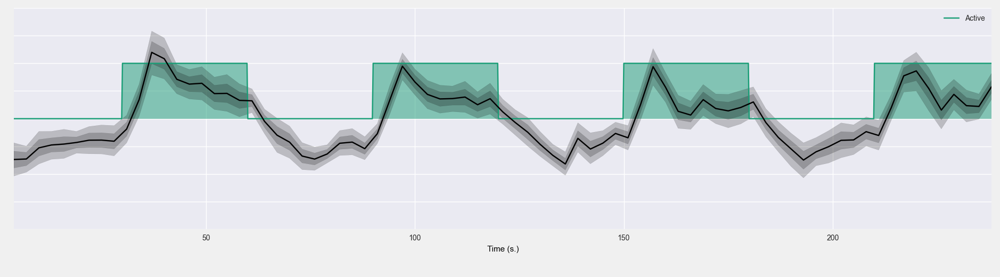

Explore fMRI¶

In this application you can visualize the underlying BOLD signal of fMRI paradigms. The interface is divide in three. At the top we have a tabbed panel for controlling the application and next to it a 3d viewer. Below is a plot where the x axis corresponds to time. All of these elements will be further explained below.
fMRI panel¶
The fMRI panel lets you control the current subject, fMRI paradigm, contrast to show; using the controls with the corresponding labels. It also lets you change to orientation of the image plane, and move along the different slices. Finally there is a check-box which allows you to display iso-contours at a certain z-score value. The slide at the bottom, lets you add transparency to these contours.
The time plot¶
The time plot at the bottom of the application shows the experiment along the time domain. The stimulus that make up the current contrast are shown as block signals in different colors
{kind=link}
When you click on a point of the image in the 3d viewer, the raw BOLD signal measured at that point will be displayed on the graph
{kind=link}
You can move the cursor around in the 3d viewer, and the bold signal will update.
Working with bold signals¶
The Timeline panel lets you perform several operations with BOLD signals. You can add several lines to the plot, which will be shown on the table labeled frozen points. The table has the following columns:
- Subject: The subject to whom the signal belongs
- Coordinates: The spatial coordinates at which the bold signal was sampled
- Contrast: The active contrast when the signal was sampled
- T Stat: The T statistic value corresponding to the signal and the contrast (read from the SPM output).
Hint
When you click on a row of the table the corresponding signal will be highlighted in the plot
{kind=link}
To remove a signal, right click on its name on the table and from the context menu select “remove”. To remove all signals from the table click on the button labeled Clear.
To add the current bold signal to the table, click on the button Freeze current point. You can retrieve the current point for all subjects in the current sample by clicking on Get point for all subjects.
By default all lines are shown in the same color, but you may also color them with respect to a nominal variable, or by grouping the signals by the location at which they were sampled. This is achieved using the box below the Freeze current point button.
{kind=link}
The above graph show several lines on top of each other, it is also possible to group lines of the same color into groups and show them as in the following graph. This is done using the box below Get point for all subjects. The graph displays the mean signal, and the confidence interval based on all the lines in the group.
{kind=link}
Exporting data¶
This application allow exporting three kinds of data, in order to do this go to the file menu and then to export, you will see three options
- Graph: Export the current time plot as a vectorial (svg or pdf) or raster (pdf) file.
- Signals: Export the current signals as a matlab data file.
- Frozen Table: Export the current Frozen points table as a csv file with 5 columns
- Index: A tuple with the subject and the coordinates
- Contrast: Name of the contrast
- Subject: Numerical id of the subject
- T Stat: T statistic associated to the contrast the subject and the coordinates.
Samples and scenarios¶
The file menu also contains options to save and load scenarios; and to change the current sample to a group of interest. In this case scenarios include the current plot, the frozen points table, the paradigm, contrast and camera of the 3d viewer. See Braviz Concepts for more information.